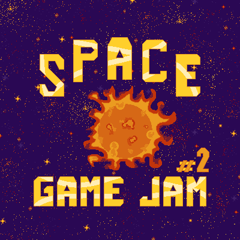
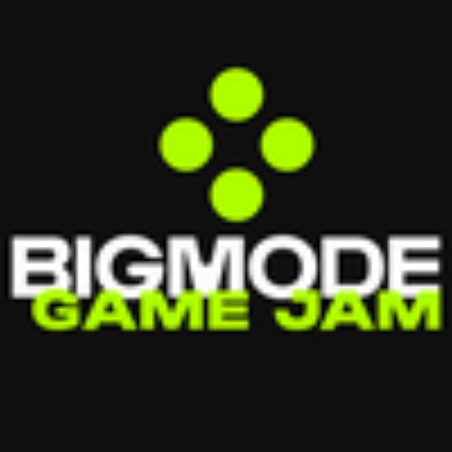
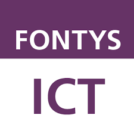

Game design is my passion. I create worlds, design mechanics, and craft experiences that captivate players. Bringing imagination to life through play and innovation.
Game Projects
2
1 Week
Löve 2D (Lua)
Failsafe Protocol
You are an AI that the crew has awakened for you to manage the power of the ship in a sticky situation where the crew is stuck in the space because of insufficient fuel.

1
1.5 Weeks
Löve 2D (Lua)
Retro Pong
Retro Pong is just the game Pong with cool-looking shaders. I made it because I wanted to gain experience with actually finishing and distributing a game.

3
1 Week
Unity (C#)
The Last One
You are the last man left on the universe. You decide to defend your base on Mars clinging to your life with the towers you are able to build. But is it worth it?
Experience
Space Game Jam #2 (2025)
Participated in Space Game Jam #2 hosted by an artist called Cozary with he themes 'Space' and 'The End' and a duration of 1 week.
Bigmode Game Jam (2025)
Participated in The Bigmode Game Jam 2025 hosted by the indie video game publisher BIGMODE with the theme 'POWER' and a duration of 9 days.
Fontys ICT (2023 - 2027)
Study of HBO-ICT. Currently in my second year with the specialization Game Design and Tecgnologies.
Skills
C#
Unity
Lua
LÖVE2D
C++
C
Hi! I'm Adil
I am a 19 year old HBO-ICT student that's currently studying at Fontys University of Applied Sciences in Eindhoven, Netherlands.
I am a passionate game developer eager to learn and grow through new projects and challenges. While balancing my studies, I constantly refine my skills to create games that are both fun and polished with the help of game jams. I focus on writing efficient, high-quality code that enhances gameplay. When faced with challenges, I strive to solve them quickly and cleanly, always aiming for the best possible experience.
If you wish to know more about me, you can find my contact information in my resume at the top!